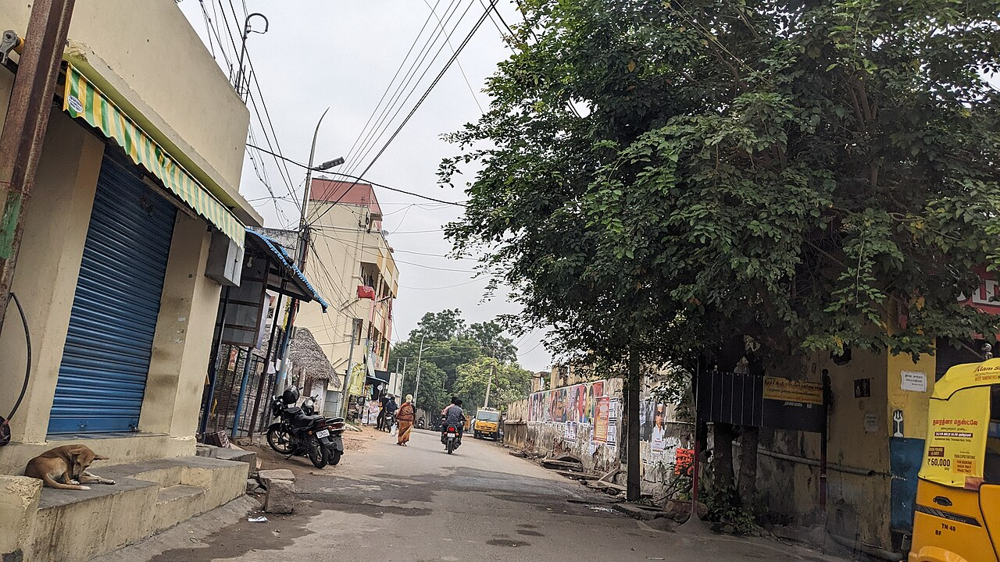

Wikimedia Commons · CC BY-SA 4.0 ⇗
Sthala Puranam
On the Kaveri river island between Srirangam and Tiruchirappalli, the Jambukeswarar temple at Thiruvanaikaval is the water (Appu) element of the Pancha Bhoota shrines, and the sanctum is believed to express water itself.
Explanation
The Sthala Purana tells of an elephant that daily gathered lotus and flowers, bathed in the river, and worshipped a hidden lingam; a spider, too, wove a web of protection over it, and the two devotees quarrelled and died, reborn as kings and again as devotees who completed (or, depending on telling, continued) the shrine. The linga stands below the ground in water, the perpetual Appu (water) element; the inner sanctum is always entered through an underground passage, the floor kept wet. The Goddess Akilandeswari here faces west (a Sundaram legend), a rare orientation.
Why the temple is revered
Jambukeswarar is the water-sthal, the Lord under standing water; a darshan here is a darshan of the element that composes most of the body. The union of the elephant (Anapithara) and spider stories teach that care, however simple, is worship. Devotees who complete the five element tour hold this shrine as the water gate of the body's pilgrimage.
🕉 Story
The Jambukeswarar temple is the water element (Appu) sthal and is intertwined with the legend of the sage Valmiki and an elephant's daily worship of a lingam beneath a jambu tree.
✨ Significance
One of the five Pancha Bhoota temples, set within the Srirangam island landscape.